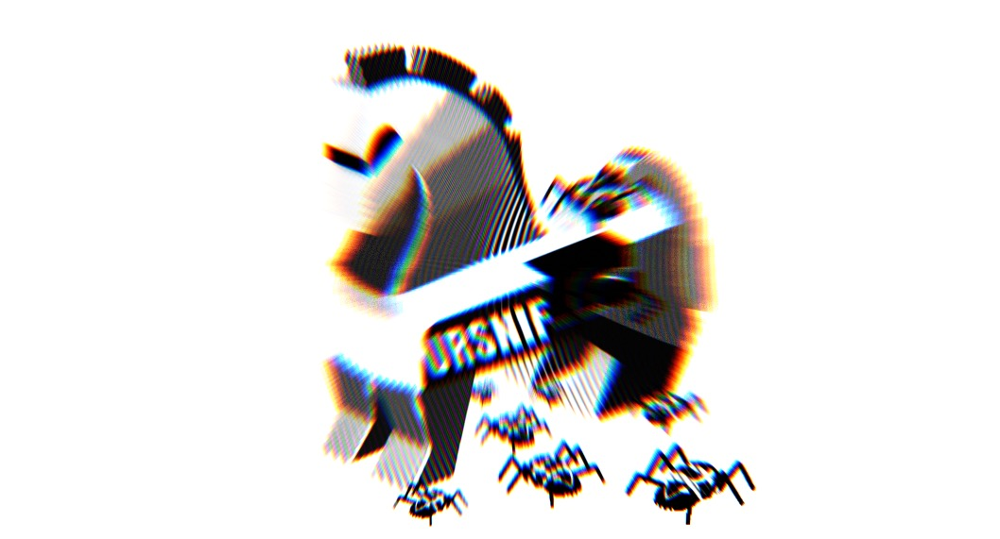
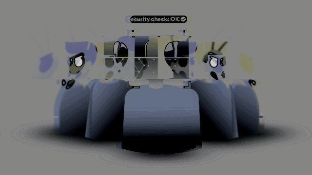
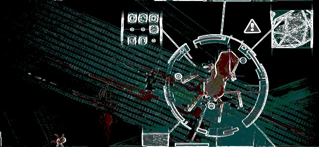

Well Known Polymorphic virusesThe following are among the most well known polymorphic viruses in the history of computers. |
|---|
URSNIF
Ursnif is a well known polymorphic virus, it contains a
Trojan component which steals credentials from the user,
in this case it’s aim are Home Banking Devices, luckily
though many banking services now use a double authentication,
which makes them seemingly safe against this type of attack. |
 |
|---|
|  |
VIRLOCK
Virlock is a polymorphic virus which, unlike ursnif, contains a
ransomware component. This virus was first seen in 2014 and by
2016 it was found that it is capable of spreading through cloud
storage and collaboration apps. It selects files and encrypts
them but also converts them to polymorphic infectors themselves.
Unlike normal ransomware this strain of viruses targets also
binary files, thus allowing virlock to render each and every
file it infects a new vector of itself. If an infected file
were to be opened by a user, all of the user’s files would be
encrypted. |
|---|
VOBFUSVOBFUS is a polymorphic virus, which contains a worm component. This virus takes advantage of the Windows AutoRun feature in order to spread removable drives. Its polymorphism, works by adding garbage code with every iteration and to modify its code so as to generate new variants. When executed Worm-VOBFUS, create AutoStart registry entries, it also connects to several sites in order to receive directives from remote malicious users. Lastly VOBFUS hook APIS (Application programming Interface) preventing task manager and process explorer from killing its process. |
 |
|---|
Well Known Polymorphic Viruse |
Edoardo Salvioni |
+41 (0) 79 812 6997 |
|---|